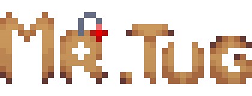
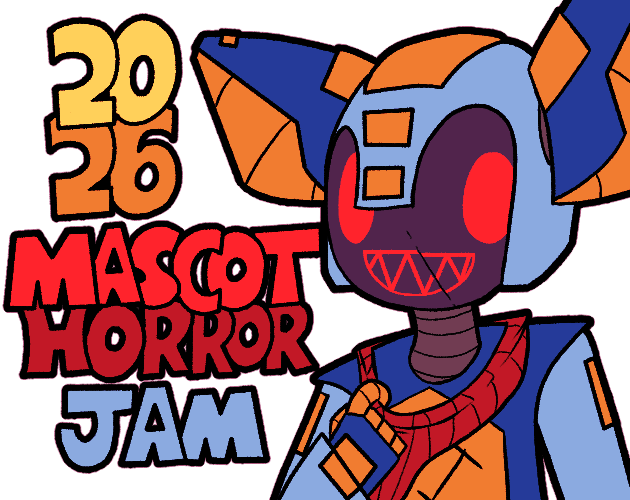

Você controla Gabriel, um garoto que recebe um adorável ursinho de pelúcia, que em instantes se torna seu brinquedo favorito. Mas uma noite, sozinho em casa, sons estranhos, portas trancadas e uma presença desconhecida tornam tudo em um pesadelo.
Agora você deve descobrir o que está acontecendo antes que seu novo melhor amigo não te deixe sair.
O desenvolvimento de Mr. Tug me fez aprender muito na Godot, novos sistemas, novas otimizações e novas técnicas, esse foi o meu primeiro projeto criando cutscenes para jogos 2D e tutoriais com GIFs, com certeza valeu a experiência.
A escolha do genêro se baseou no tema dado pelos organizadores da game jam, o tema era "Childhood Horror" (Terror/Pesadelo infantil) baseado nisso, nosso game designer pensou em uma história simples, um garoto que ganha um boneco amaldiçoado.
O jogo foi desenvolvido utilizando a linguagem de programação GDScript na Godot 4.6.2 3D. A arte do jogo foi feita com Aseprite e os sons e música com o FL Studio.
O design do jogo foi baseado em jogos como Midnight Scenes, No, I'm Not a Human e Mr Hopp's Playhouse.
As mecânicas do jogo se baseiam em interações com a casa, isso significa que eu tive que criar uma interação para cada coisa do ambiente. Além disso, por se tratar de um jogo de história linear algo que nunca havia feito antes até o Who Did That?, foi muito difícil pensar em como faria isso, sem contar os novos sistemas de cutscene, tutorial com GIFs e inventário drag and drop que nunca havia feito.
O jogo passou por constantes testes e ajustes de bugs durante o desenvolvimento para que pudéssemos alcançar o melhor resultado possível para envia-lo na itch.io, apesar de termos enviado o jogo incompleto por problemas durante o desenvolvimento, conseguimos fazer um bom jogo e atualiza-lo.
Foi um projeto de desafios constantes para mim como programador, uma onda de coisas novas, mas que me rendeu um ótimo aprendizado que poderei utilizar em jogos posteriores. Apesar dos diversos problemas e mudanças no escopo, o jogo manteve sua essência e terror, foi ótimo para praticar.
